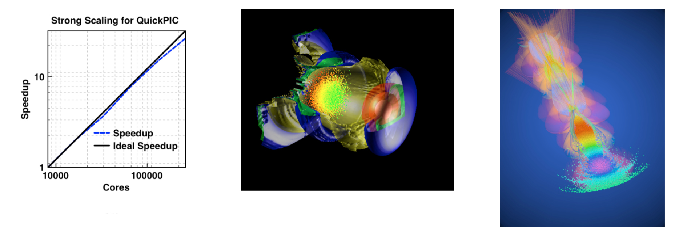

Access: You can obtain QuickPIC from Github here.
Description: QuickPIC [1, 2] is a 3D fully parallelized, fully relativistic, three-dimensional quasi-static PIC code. It was the first 3D quasi-static code and remains the only fully 3D quasi-static PIC code. It was built from components from the UPIC Framework. The algorithm is based on the quasi-static approximation, which separates out the time scale of the evolution of the driver from the plasma evolution and reduces a fully 3D EM field solve and particle push into a sequence of 2D solves and particle pushes. A predictor-corrector loop is required and only one iteration is often needed even for nonlinear problems. For the laser driver, the ponderomotive guiding center approximation is used. QuickPIC results agree with full PIC codes such as OSIRIS results for problems of interest. A field ionization module based on the ADK model is implemented. With a pipelining algorithm and improvements to the iteration loop, QuickPIC achieves good strong scaling to more than 100,000 cores on Titan and Blue Waters.

Figure 1: Strong Scaling for QuickPIC; Figure 2: QuickPIC simulation of Laser Wake Field Accelerator (LWFA) with an electron beam load (Image made by Weiming An); Figure 3: QuickPIC simulation of two-bunch electron beam driven Plasma Wake Field Accelerator (PWFA) at FACET (Image made by Weiming An). It was chosen as the cover of Nature on Nov 6th 2014.
References
[1] C. Huang, V. K. Decyk, C. Ren, M. Zhou, W. Lu, W. B. Mori, J. H. Cooley, T. M. Antonsen, Jr., and T. Katsouleas, “Quickpic: A highly efficient particle-in-cell code for modeling wakefield acceleration in plasmas,” J. Comput. Phys. 217, 658 (2006). doi link
[2] W. An, V. K. Decyk, W. B. Mori, and T. M. Antonsen, Jr., “An improved iteration loop for the three dimensional quasi-static particle-in-cell algorithm: Quickpic,” J. of Comp. Phys. 250, 165 (2013). doi link